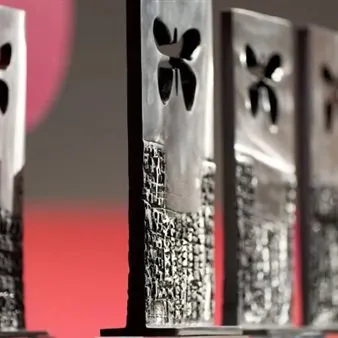

sab 21 nov
Premio Lucchetta 2026 - Eventi 21 novembre
10:15–10:45 Senza scampo Fabio Polese (El País), vincitore Fotografia con “Bambini in trincea”, in dialogo con Nada Čok, giornalista Rai. 10:30–11:00 Hasta el final Ridotto del Teatro Miela. Inchiesta radio-podcast di Edoardo Anziano, Gabriele Ciraolo e Giovanni Soini sulla…
 Indicazioni
Indicazioni
- Costi e prenotazioni
- Costo non indicato · Prenotazione non indicata
- Programma
- Programma da verificare. Apri la fonte ufficiale per orari e possibili aggiornamenti.
- In caso di maltempo
- Nessuna indicazione specifica pubblicata.
- Note
- Acquisito automaticamente dalla fonte.
L’EVENTO
Descrizione completa
17:00 Saluti di apertura
Con Daniela Schifani Corfini Luchetta, presidente della Fondazione Luchetta Ota D’Angelo Hrovatin, e Fabiana Martini, segretaria della Giuria del Premio Luchetta.
17:15–18:30 Come stai, mondo bello? Gli equilibri internazionali all’indomani delle elezioni in Serbia, Brasile, Israele e Stati Uniti
Lucia Capuzzi, inviata di Avvenire in Brasile. Azzurra Meringolo, inviata della Rai in Israele. Massimo Moratti, corrispondente OBCT da Belgrado ed esperto di diritti umani. Trisha Thomas, Associated Press, presidente dell’Associazione Stampa Estera in Italia.
Modera Andrea Luchetta, giornalista e inviato Rai.
18:45–20:15 E ancora chiediamo perdono
Anna Maria Selini (Altreconomia), vincitrice Radiofonia con “Bambini senza pace”. Giammarco Sicuro (TG3), vincitore TV News con “La scuola proibita. La lotta di una classe di bambini palestinesi a cui viene negata l’istruzione”.
Con Loris De Filippi, operatore umanitario. Modera Gioia Meloni, giornalista.
21:00 Balcanica
Film di Nicola Sorcinelli (Italia, Serbia, Croazia, 2026), con Matilda De Angelis, Babak Karimi, Ivar Wafaei e Giovanni Toscano.
Con Roberto Buttignol, operatore di Medici Senza Frontiere
Incontri a ingresso libero, verificare sul sito ufficiale se necessaria prenotazione ai singoli eventi.
IL PROGRAMMA
Programma e orari
Appuntamenti raccolti dalle fonti elencate. Dove manca un orario, non è ancora disponibile in questa scheda.
Programma pubblicato
- 17:15–18:30
- 18:45–20:15
INFORMAZIONI UTILI
Prima di partire
- Controllare la fonte prima di partire.
ORGANIZZAZIONE